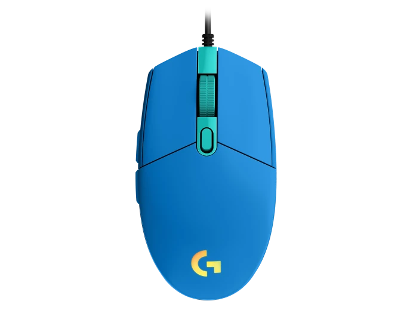

Mouse G203 para juegos
Descubre el mouse G203 para juegos.
Dotado de iluminación RGB LIGHTSYNC con efectos de onda de colores
Mouse inalambrico, Bluetooth

Mouse silencioso recargable HP 710
Mouse inalambrico, Bluetooth
Tecnología de sensor: Alta precisión Darkfield
Valor nominal: 1000 dpi
dpi (valores mínimo y máximo): 200 dpi a 8000 dpi (ajustable en incrementos de 50 dpi)

Mouse silencioso recargable HP 710
Alta precisión Darkfield
Rueda de desplazamiento: sí, con cambio automático
Desplazamiento horizontal: sí, manteniendo presionado el botón lateral mientras se gira el botón rueda
Plástico en grafito: 78% de material reciclado posconsumo 2Excluye plástico del conjunto de cableado impreso (PWA), receptor, cable, cableado FCC y empacado.